토목산업기사 (2008-05-11 기출문제)
1과목: 응용역학
1. 다음 보에서 B 점의 수직반력은 얼마인가?
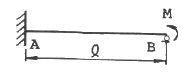
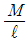
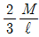
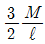
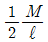
(정답률: 40%)

2. 지름 D인 원형단면에 전단력 S가 작용할 때 최대 전단응력의 값은?
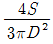
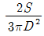
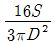
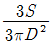
(정답률: 55%)
3. 그림과 같은 직사각형 단면의 기둥에서 e = 12cm의 편심 거리에 P = 100t 의 압축하중이 작용할 때 발생하는 최대 압축응력은? (단, 기둥은 단주이다.)
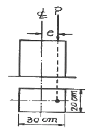
- 153 kg/cm2
- 180 kg/cm2
- 453 kg/cm2
- 567 kg/cm2
(정답률: 37%)
4. 다음 그림에서 연행 하중으로 인한 최대 반력 RA는?
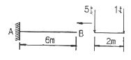
- 6t
- 5t
- 3t
- 1t
(정답률: 알수없음)
5. 금의 게르버보에서 A점의 수직반력은?
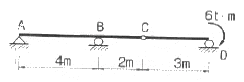
- 1t (↑)
- 2t (↑)
- 3t (↑)
- 4t (↑)
(정답률: 50%)
6. 다음 그림과 같은 구조물의 부정정 차수는?
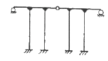
- 9차 부정정
- 10차 부정정
- 11차 부정정
- 12차 부정정
(정답률: 알수없음)
7. 그림에서 응영된 삼각형 단면의 X축에 대한 단면 2차모멘트는 얼마인가?
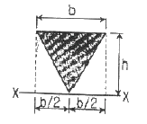
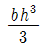
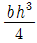
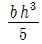
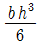
(정답률: 알수없음)
8. 그림과 같은 3활절 라멘의 지점 A의 수평반력(HA)는?
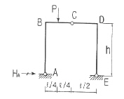
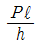
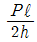
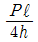
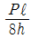
(정답률: 알수없음)
9. 다음 그림과 같이 사각형과 삼각형을 합하여 만든 도형의 도심 yc 값은?
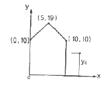
- 6.12
- 6.45
- 7.48
- 7.97
(정답률: 43%)
10. 그림과 같이 D점에 6t의 하중을 매달 때 BC 부재에 용하는 힘은?
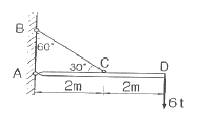
- 6t
- 8t
- 12t
- 24t
(정답률: 28%)
11. 지름이 D이고 길이가 50D인 원형단면으로 된 기둥의 세장비를 구하면?
- 200
- 150
- 100
- 50
(정답률: 알수없음)
12. 그림과 같은 정사각형 막대 단면의 변형에너지는?
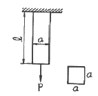
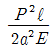
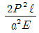
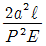
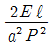
(정답률: 알수없음)
13. 다름 트러스에서 하현재인 U부재의 부재력은?
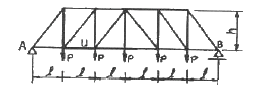
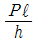
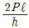
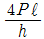
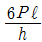
(정답률: 40%)
14. 켄틸레버 보에서 보의 B점에 집중하중 P와 우력모멘트가 작용하고 있다. B점에서 처짐각(θb)는 얼마인가? (단, 보의 EI는 일정하다.)
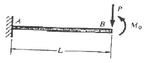
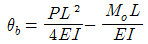
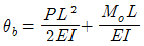
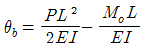
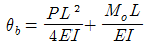
(정답률: 46%)
15. 지름 20cm의 통나무에 자중과 k하중에 의한 900kg·m의 외력 모멘트가 작용한다면 최대 흼응력은?
- 200kg/cm2
- 154.7kg/cm2
- 114.6kg/cm2
- 219.7kg/cm2
(정답률: 알수없음)
16. 다음 부재의 전체 축방향 변위는? (단, E는 탄성계수, A는 단면적이다.)
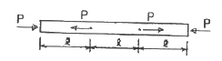
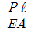
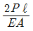
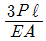
- 0
(정답률: 54%)
17. 보의 단면이 그림과 같고 지간이 같은 단순보에서 중앙에 집중하중 P가 작용할 경우 처짐 y1은 y2의 몇 배인가?
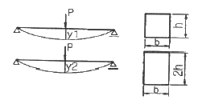
- 1
- 2
- 4
- 8
(정답률: 54%)
18. 탄성계수 E는 2,000,000kg/cm2 이고 포아슨 비 ν=0.3일 때 전단탄성계수 G는 얼마인가?
- 769,231kg/cm2
- 751,372kg/cm2
- 734,563kg/cm2
- 710,201kg/cm2
(정답률: 알수없음)
19. 다음 단순보의 개략적인 전단력도는?
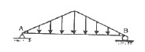
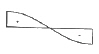
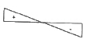
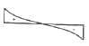
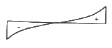
(정답률: 알수없음)
20. 단면이 일정한 강봉을 인장응력 210kg/cm2으로 당길 때 0.02cm 가 늘어났다면 이 강봉의 처음 길이는? (단, 강봉의 탄성계수는 2,100,000kg/cm2 이다.)
- 3.5m
- 3.0m
- 2.5m
- 2.0m
(정답률: 알수없음)
2과목: 측량학
21. 비행 고도 4600m에서 초점거리 184mm 사진기로 촬영한 수직항공사진에서 길이 150m 교량은 얼마의 크기로 표현 되는가?
- 8.5mm
- 8.0mm
- 7.5mm
- 6.0mm
(정답률: 82%)
22. 축적 1:5000의 지형도에서 두점 A, B간의 도상거리는 24mm였다. A점의 표고가 115m, B점의 표고가 145m이며, 두점 A, B간은 등경사라 할 때 120m 등고선이 통과하는 위치는 지상 A로부터 수평거리로 얼마나 떨어져 있는가?
- 5m
- 20m
- 60m
- 100m
(정답률: 60%)
23. 노선의 길이가 2.5km인 결합트래버스 측량에서 폐합비를 1/5000로 제한할 때 허용되는 최대 폐합차는?
- 0.2m
- 0.4m
- 0.5m
- 0.6m
(정답률: 67%)
24. A점에서 전진법에 의한 평판측량으로 측량한 결과 폐합오차가 도상으로 0.3mm의 결과를 얻었다. D점에서의 오차 조정량은 얼마인가? (단, 축척 1:1000, 측선의 길이가 AB=76.7m, BC=87.3m, CD=69.5m, DA=79.5m)
- 16cm
- 19cm
- 22cm
- 25cm
(정답률: 70%)
25. 수준측량 작업상의 주의사항에 대한 설명으로 옳은 것은?
- 야장 기입시 전시, 후시를 잘못 기입하여도 성과에는 차이가 없다.
- 기계설치를 되도록 견고한 곳에 설치하고 시준거리는 가능한 전시를 후시보다 길게 하는 것이 좋다.
- 표척은 수직으로 세우고 읽음값은 5mm 단위로 읽는다.
- 수준측량은 왕복 측량을 원칙으로 한다.
(정답률: 알수없음)
26. 다음 오차에 대한 설명중 옳지 않은 것은?
- 정오차는 원인과 상태만 알면 오차를 제거할 수 있다.
- 부정오차는 최소 제곱법에 의해 처리된다.
- 잔차는 최확값과 관측값의 차를 말한다.
- 누적오차는 정오차, 착오를 전부 소거한 후에 남는 오차를 말한다.
(정답률: 알수없음)
27. 삼각망 중 조건식이 가장 많아 가장 높은 정확도를 얻을 수 있는 것은?
- 단열삼각망
- 사변형삼각망
- 유심다각망
- 트랫버스망
(정답률: 90%)
28. 절토면의 형상이 그림과 같은 때 절토면적은?
- 11.5m2
- 13.5m2
- 15.5m2
- 17.5m2
(정답률: 알수없음)
29. 하천의 수위관측소의 설치장소로 적당하지 않은 것은?
- 하상과 하안이 안전한 곳
- 홍수시에도 양수량을 쉽게 알아볼 수 있는 곳
- 수위가 구조물의 영향을 받지 않는 곳
- 수위의 변화가 크게 발생하여 그 변화가 명확한 곳
(정답률: 92%)
30. 그림과 같이 두 방향전의 교회에 의해서 점의 위치를 정할 때 한 방향선(거리S)에 Δα 로 같은 크기의 방향오차가 있었다면 교회각의 60°와 30°인 경우 위치 오차 크기에 대한 설명으로 옳은 것은?
- QQ′ 는 PP′ 의 약 2배 이다.
- QQ′ 는 PP′ 의 약 3배 이다.
- QQ′ 는 PP′ 의 약 √2 배 이다.
- QQ′ 는 PP′ 의 약 √3 배 이다.
(정답률: 28%)
31. 곡선부에서 차량의 뒷바퀴가 앞바퀴보다 안쪽으로 주행하는 현상을 보완하기 위해 설치하는 것은?
- 캔트
- 확폭
- 편구배
- 차폭
(정답률: 알수없음)
32. 토목공사에 사용되는 대축적 지형도의 등고선에서 주곡선의 간격으로 틀린 것은?
- 축척 1:500 - 0.5m
- 축척 1:1000 - 1.0m
- 축척 1:2500 - 2.0m
- 축척 1:5000 - 5.0m
(정답률: 알수없음)
33. 다음 중 천문좌표계의 종류가 아닌 것은?
- 적도좌표
- 지평좌표
- 황도좌표
- 원주좌표
(정답률: 알수없음)
34. 도로의 단곡선 계산에서 노선기점으로부터 교점까지의 추가거리와 교각을 알고 있을 때 곡선 시점의 위치를 구하기 위해서 계산되어야 하는 요소는?
- 접선장(T.L)
- 곡선장(C.L)
- 중앙종거(M)
- 접선에 대한 지거(Y)
(정답률: 알수없음)
35. 폐합다각측량에서 트랜싯과 광파기에 의한 관측을 통해 관측보다 거리 관측 정밀도가 높을 때 오차를 배분하는 방법으로 옳은 것은?
- 해당 측선 길이에 비례하여 배분한다.
- 해당 측선 길이에 반비례하여 배분한다.
- 해당 측선의 위, 경거의 크기에 비례하여 배분한다.
- 해당 측선의 위, 경거의 크기에 반비례하여 배분한다.
(정답률: 알수없음)
36. 경사각 5°인 경사사진이 있다. 등각점의 위치는 주점으로부터 얼마의 거리에 있는가? (단, 초점거리는 150mm이다.)
- 13.1mm
- 6.55mm
- 5.10mm
- 2.55mm
(정답률: 30%)
37. 다음 야장에서 C점의 기계고는 얼마인가? (단위:m)
- 29.22 m
- 31.69m
- 33.57 m
- 35.79m
(정답률: 80%)
38. 다음 측선 의 방위각은? (단, A(50m,50m), B(250m,250m), ∠A=72° 13´ 48″, ∠1=112° 09´ 12″ 이다.)
- 40° 37´
- 43° 23´
- 46° 37´
- 49° 23´
(정답률: 알수없음)
39. R=80m, L=20m인 클로소이드의 종점 좌표를 단위클로소이드표에서 찾아보니 X=0.499219, y=0.020810 였다면 실제 X, Y 좌표는?
- X=19.969m, Y=0.832m
- X=9.984m, Y=0.416m
- X=39.936m, Y=1.665m
- X=29.109m, Y=1.218m
(정답률: 알수없음)
40. 축척 1:50000 지도상에서 4cm2 에 대한 지상에서의 실제 면적은 얼마인가?
- 1km2
- 2km2
- 100km2
- 200km2
(정답률: 알수없음)
3과목: 수리학
41. 관수로와 개수로의 흐름에 대한 설명으로 옳지 않은 것은?
- 관수로는 자유표면이 없고 개수로는 있다.
- 관수로는 두 단면간의 속도차로 흐르고 개수로는 두 단면간의 압력차로 흐른다.
- 관수로는 점성력의 영향이 크고 개수로는 중력의 영향력이 크다.
- 개수로는 후르드수(Fr)로 상류와 사류로 구분할 할 수 있다.
(정답률: 알수없음)
42. 다음 비력(M)곡선에서 한계수심을 나타내는 것은?
- h1
- h2
- h3
- h3 - h1
(정답률: 알수없음)
43. 내경 600m, 두께 10mm의 강관에 100kg/cm2 의 압력수를 통과 시킬 때 발생하는 인장응력은?
- 1000 kg/cm2
- 2000 kg/cm2
- 3000 kg/cm2
- 4000 kg/cm2
(정답률: 55%)
44. 다음 설명 중 옳은 것은?
- 수문학에서 강수란 구름이 응축되어 지사으로 떨어지는 모든 형태의 수분 중 비(Rain)만을 의미한다.
- 우량의 크기는 일정한 면적에 내린 총우량에 그 면적을 곱하여 체적으로 표시한다.
- 증발현상이란 물분자들이 눈 혹은 얼음과 같은 고체 상태로부터 액체상태를 거치지 않고 바로 기화하는 것을 말한다.
- 지상에 내린 물이 토양면을 통해 스며들어 중력의 영향으로 계속 지하로 이동하여 지하수면에 도달하는 현상을 침루(percolation)라 한다.
(정답률: 알수없음)
45. 직사각형 위어(weir)의 월류수심의 측정에 2% 의 오차가 있다면 유량에는 %의 오차가 발생하는가? (단, 유량계산은 프란시스(Francis)공식을 사용하고 월류시 단면수축은 없는 것으로 가정한다.)
- 1%
- 2%
- 3%
- 4%
(정답률: 37%)
46. 그림과 같이 직경 10cm의 단면에 유속 50m/sec 의 분류가 판에 충돌하여 90° 로 구부러질 때 판에 작용하는 힘은?
- 2.003t
- 1.282t
- 12.820t
- 32.028t
(정답률: 알수없음)
47. 부체(浮體)가 불안정한 일반적인 조건으로 옳은 것은?
- 부양면에 대한 단면 2차 모멘트가 클수록
- 부양면에 대한 단면 2차 모멘트가 작을수록
- 부양면에 대한 단면 1차 모멘트가 클수록
- 부양면에 대한 단면 1차 모멘트가 작을수록
(정답률: 알수없음)
48. 지하수 흐름의 기본방정식으로 이용되는 법칙은?
- Chezy의 법칙
- Darcy의 법칙
- Manning의 법칙
- Reynolds의 법칙
(정답률: 알수없음)
49. 수문학에서 저수위란 1년을 통하여 몇 일은 이보다 저하하지 않는 수위를 말하는가?
- 1⑤일
- 185일
- 275일
- 355일
(정답률: 알수없음)
50. 표면장력의 단위로 옳은 것은?
- dyne/cm4
- dyne/cm3
- dyne/cm2
- dyne/cm
(정답률: 알수없음)
51. 다음 중 피압대수층의 지하수를 양수하는 우물을 무엇이라 하는가?
- 굴착정
- 심정(깊은 우물)
- 천정(얕은 우물)
- 집수암거
(정답률: 알수없음)
52. 오리피스에서의 실제 유속을 구하기 위한 에너지 손실은 어떻게 고려할 수 있는가?
- 이론 유속에 유속계수를 곱한다.
- 이론 유속에 유량계수를 곱한다.
- 이론 유속에 수축계수를 곱한다.
- 이론 유속에 모형계수를 곱한다.
(정답률: 알수없음)
53. 다음 정수압의 성질 중 옳지 않은 것은?
- 정수압은 수중의 가상면에 항상 수직으로 작용한다.
- 정수압의 강도는 전 수심에 걸쳐 균일하게 작용한다.
- 정수 중의 한점에 작용하는 수압의 크기는 모든 방향에서 동일한 크기를 갖는다.
- 정수압의 강도는 단위 면적에 작용하는 힘의 크기를 표시한다.
(정답률: 58%)
54. 에너지 선은 동수경사에 무엇을 더한 점을 연결한 선으로 정의 되는가?
- 전수두(H)
- 위치수두(Z)
- 속도수두(
 )
) - 압력수두(
 )
)
(정답률: 50%)
55. 다음 중 부체의 안정을 조사할 때 고려되지 않는 것은？
- 경심
- 수심
- 부심
- 물체중심
(정답률: 77%)
56. 어떤 유역에 발생한 강우강도를 I, 침투율을 fi, 총침투량을 Fi, 토양수분 미흡량을 M이라 할 때 하천에서의 유출량은 증가하나 지하수위 변화가 없는 경우는?
- I ＞ fi, Fi ＜ M
- I ＞fi, Fi ＜ M
- I ＜ fi, Fi ＞ M
- I ＜ fi, Fi ＞M
(정답률: 알수없음)
57. 유량 6.28m3를 송수하기 위하여 안지름 2m의 주철관 100m를 설치하였을 때 적당한 관로의 동수경사는 약 얼마인가? (단, 마찰손실계수 f = 0.03)
- 1/1000
- 2/1000
- 3/1000
- 4/1000
(정답률: 100%)
58. 강우강도와 지속기간 관계에 대한 설명으로 틀린 것은?
- 일반적으로 강우강도가 크면 클수록 그 강우가 계속되는 기간은 짧다.
- 강우강도-지속기간 관계는 도시지역 우수관계 설계 등을 위한 설계 유량의 결정에 유효하게 사용된다.
- 강우강도-지속기간 관계는 지역적인 특성은 무시할 수 있어 시간적인 특성만을 고려한다.
- 강우강도-지속기간 관계의 경험식으로는 Talbot형 등이 있다.
(정답률: 50%)
59. 층류일 때 관수로의 유량에 대한 설명 중 틀린 것은?
- 유량의 크기는 관지름의 4제곱 (R4)에 비례한다.
- 유량의 크기는 손실수두의 크기 (hL)에 비례한다.
- 유량의 크기는 유체의 단위중량 크기(γ)에 반비례한다.
- 유량의 크기는 점성계수의 크기(μ)에 반비례한다.
(정답률: 알수없음)
60. [FLT]계 차원으로 표현할 때 힘(F)의 차원이 포함되지 않은 것은?
- 압력(P)
- 점성계수(μ)
- 동점성계수(ν)
- 표면장력(T)
(정답률: 28%)
4과목: 철근콘크리트 및 강구조
61. 보의 길이 ℓ = 30m, 활동량 Δℓ = 3 mm, 긴장재의 탄성계수(Ep) = 200000 MPa일 때 프리스트레스 감소량 Δfp 는? (단, 일단 정착임)
- 40MPa
- 15MPa
- 30MPa
- 20MPa
(정답률: 알수없음)
62. 다음은 프리스트레스의 감소원이다. 이중 프리스트레스 도입후에 시간의 경과에 따라 일어나는 감소원인은 다음 중 어느 것인가?
- 콘크리트의 탄성수축
- PS강재와 쉬스 사이의 마찰
- 정착장치의 활동
- PS강재의 릴랙세이션
(정답률: 알수없음)
63. 강도설계법에서 보에 대한 등가깊이 a = β1C 인데 fck 가 45MPa일 경우 β1의 값은?
- 0.85
- 0.731
- 0.635
- 0.631
(정답률: 100%)
64. D13철근을 U형 스터럽으로 가공하여 300mm 간격으로 부재 축에 직각이 되게 설치한 전단 철근의 강도 Vs 는? (단, 스터럽의 설계기준항복강도(fyt)=400MPa, d=600mm, D13철근의 단면적은 127mm2로 계산하며 강도설계임)
- 101.6 KN
- 203.2 KN
- 406.4 KN
- 812.8 KN
(정답률: 82%)
65. 그림과 같은 판형(Plate Girder)의 각부 명칭으로 틀린 것은?
- A - 상푸판(Flange)
- B - 보강재(Stiffener)
- C - 덮개판(Cover plate)
- D - 횡구(Bracing)
(정답률: 74%)
66. 계수 하중이 아래 그림과 같은 단철근 직사각형보의 전단에 대한 휘험단면에서의 전단력은 얼마인가?
- 120 N
- 180 N
- 210 N
- 240 N
(정답률: 알수없음)
67. 강도설계법에서 단철근 직사각형 보가 fck = 21MPa, fy = 300MPa 일때 균형철근비는 얼마인가 ?
- ρb = 0.34
- ρb = 0.034
- ρb = 0.044
- ρb = 0.0044
(정답률: 알수없음)
68. 강도설계법에서 전단 보강 철근의 공칭 전단강도 Vs가 bwd를 초과하는 경우에 대한 설명으로 옳은 것은?
- 전단철근을 d/4이하, 600mm 이하로 배치해야 한다.
- 전다철근을 d/2이하, 300mm 이하로 배치해야 한다.
- 전단철근을 d/4이하, 300mm 이하로 배치해야 한다.
- bwd 의 단면을 변경하여야 한다.
(정답률: 84%)
69. 인장을 받는 이형철근의 겹침이음에서 배근된 철근량이 이음부 전체 구간에서 해석결과 요구되는 소요철근량의 2배 이상이고 소요 겹침이음길이 내에서 겹침이음된 철근량이 전체 철근량의 1/2이하인 경우 A급이음에 해당한다. 이러한 A금이음의 겹침이음길이는 규정에 따라 계산된 인장 이형철근의 정착길이 ℓd의 몇배 이상이어야 하는가?
- 1.0배
- 1.2배
- 1.3배
- 1.5배
(정답률: 알수없음)
70. 다음 그림에서 인장 철근의 배근이 잘못된 것은?
(정답률: 알수없음)
71. 다음 그림에서 인상력 P = 400kN이 작용할 때 용접이음부의 응력은 얼마인가?
- 96.2 MPa
- 101.2 MPa
- 1⑤.3 MPa
- 108.6 MPa
(정답률: 73%)
72. 철근콘크리트의 성립요건 중 틀린 것은?
- 철근과 콘크리트의 부착강도가 크다.
- 부착면에서 철근과 콘크리트의 변형률은 같다.
- 철그느이 열팽창계수는 콘크리트의 열팽창계수 보다 매우 크다.
- 압축은 콘크리트가 인장은 철근이 부담한다.
(정답률: 100%)
73. 뒷부벽식 옹벽의 뒷부벽은 어떤 보로 보고 설계하는가?
- 직사각형보
- T형보
- 단순보
- 연속보
(정답률: 알수없음)
74. 강도설계시에 콘크리트가 부담하는 공칭 전단강도 Vc는 약 얼마인가? (단, fck = 24MPa, 부재의 폭 300mm, 부재의 유효깊이 500mm 이며 전단과 휨만을 받는 것으로 한다.)
- 100 KN
- 110 KN
- 118 KN
- 122 KN
(정답률: 82%)
75. 프리스트레스트 콘크리트를 설명할 수 있는 기본개념이 아닌 것은?
- 응력 개념
- 강도 개념
- 하중평형의 개념
- 가상일의 개념
(정답률: 50%)
76. 휨 부재의 단면을 산정 할 때 최소철근량 규정을 지켜야 하는데, 이렇게 최소 인장철근 단면적을 규정하는 이유는 무엇이가?
- 취성파괴를 피하기 위해서
- 균형적인 철근 분배를 위해서
- 과다철근보(과다강보)의 단점 보완을 위해서
- 경제적인 단면 이용을 위해서
(정답률: 43%)
77. 강도설계법에서 D25(공칭직경 25.4mm)의 인장철근을 겹침 이음할 때 기본정착 길이 ℓd는 얼마인가? (단, fck = 21MPa, fy =300MPa)
- 800mm
- 998mm
- 1024mm
- 1138mm
(정답률: 알수없음)
78. 그림과 같은 독립확대기초에서 전단에 대한 위험단면의 둘레길이는 얼마인가? (단, 2방향 작용에 의하여 펀칭전단이 발생하는 경우)
- 1600mm
- 2800mm
- 3600mm
- 4800mm
(정답률: 알수없음)
79. 철근콘크리트의 균열에 대한 설명으로 틀린 것은?
- 이형 철근을 사용하면 균열폭을 줄일 수 있다.
- 동일 철근량에 대해 가능한 한 지름이 가는 철근을 많이 사용하면 균열을 줄일 수 있다.
- 가능한 범위내에서 배근간격이 작을수록 균열폭은 증가한다.
- 균열폭은 철근의 응력에 비례한다.
(정답률: 28%)
80. 강도 설계법엣 균형단면의 단철근 직4각형보의 중립축의 위치 c값을 구하는 식으로 옳은 것은? (단, d : 보의 유효깊이, fy : 철근의 설계기준항복강도, fs : 철근의 응력)
(정답률: 90%)
5과목: 토질 및 기초
81. 모래치환법에 의한 흙의 밀도시험에서 모래를 사용하는 이유는?
- 시료의 함수비를 알기 위해서
- 시료의 무게를 알기 위해서
- 시료의 부피를 알기 위해서
- 시료의 입경을 알기 위해서
(정답률: 60%)
82. 그림과 k같은 모래 지반에서 흙의 단위중량이 1.8t/m3이다. 정지토압 계수가 0.5 이면 깊이 5m 지점에서의 수평 응력은 얼마인가?
- 4.5t/m2
- 8.0t/m2
- 13.5t/m2
- 15.0t/m2
(정답률: 알수없음)
83. 투수계수에 관한 셜명으로 잘못된 것은?
- 투수계수는 일반적으로 흙의 입자가 작을 수록 작은 값을 나타낸다.
- 수온이 상승하면 투수계수는 증가한다.
- 같은 종류의 흙에서 간극비가 증가하면 투수계수는 작아진다.
- 투수계수는 수두차에 반비례한다.
(정답률: 알수없음)
84. 말뚝의 재하시험시 연약점토 지반인 경우 Pile의 타입 후 20일 이상 방치한 후 말뚝 재하시험을 한다. 그 이유는?
- 타입시 말뚝주변의 흙이 교란되었기 때문에
- 부 마찰력이 생겼기 때문에
- 타입된 말뚝에 의해 흙이 압축되었기 때문에
- 주면 마찰력이 너무 크게 작용하였기 때문에
(정답률: 82%)
85. 지하수위가 지표면과 일치되며 내무마찰각이 30°, 포화단위중량(γsat) 2.0t/m3 이며 점착력이 0인 사질토로 된 반무한사면이 15°로 경사져 있다. 이때 이사면의 안전율은?
- 1.00
- 1.08
- 2.00
- 2.15
(정답률: 82%)
86. 흙의 전단강도(τ)에 관한 설명 중 옳지 않은 것은?
- 순수 점토에서는 ø = 0 이므로 τ = C 이다.
- 순수 모래에서는 C = 0 이므로 τ = σ∙tanø 이다.
- 실트에서는 C = 0 이므로 τ = σ∙tanø 이다.
- 일반 흙에서는 ø ＞ 0, C ＞ 0 이므로 τ = C + σ∙tanø 이다.
(정답률: 50%)
87. 다음 그림에서 X – X 단면에 작용하는 유효응력은?
- 4.26 t/m2
- 5.24 t/m2
- 6.36 t/m2
- 7.21 t/m2
(정답률: 79%)
88. 비중이 2.50 , 함수비 40%인 어떤 포화토의 한계동수 경사를 구하면?
- 0.75
- 0.55
- 0.50
- 0.10
(정답률: 50%)
89. 어떤 모래지반의 표준관입시험에서 N값이 40이었다. 이 지반의 상태는?
- 대단히 조밀한 상태
- 조밀한 상태
- 중간 상태
- 느슨한 상태
(정답률: 37%)
90. 어떤 흙의 건조단위중량이 1.64t/m3 이였다. 이 흙 입자의 비중이 2.69일때 간극률은?
- 36%
- 39%
- 42%
- 45%
(정답률: 알수없음)
91. 다음의 사운딩(Sounding)방법 중에서 동적인 사운딩(Sounding)은?
- 이스키메타(lskymeter)
- 베인 전단시험(Vane Shear Test)
- 화란식 원추 관입시험(Dutch Cone Penetration)
- 표준관입시험(Standard Penetration Test)
(정답률: 알수없음)
92. RMR(Rock Mass Rating)암반 분류법의 평가 항목에 해당되지 않는 것은?
- R.Q.D
- C.B.R
- 지하수 상태
- 암석의 일축압축 강도
(정답률: 67%)
93. 함수비가 18%의 흙 500kg을 함수비 24%로 만들려고 한다. 추가해야 하는 물의 양은 약 얼마인가?
- 80kg
- 54kg
- 39kg
- 26kg
(정답률: 55%)
94. 압밀시험에서 시간-침하곡선으로부터 직접 구할 수 있는 사항은?
- 압밀계수
- 선행압밀압력
- 점성보정계수
- 압충지수
(정답률: 84%)
95. 노상토의 지지력의 크기를 나타내는 CBR 값의 단위는 무엇인가?
- kg/cm2
- kgㆍcm
- %
- kg/cm3
(정답률: 알수없음)
96. 연약지반 개량공법으로 압밀의 원리를 이용한 공법이 아닌것은?
- 프리로딩 공법
- 바이브로 플로테이션 공법
- 대기압 공법
- 페이퍼 드레인 공법
(정답률: 100%)
97. 내부마찰각이 0°인 점성토로 일축압축 시험결과 일축압축 강도가 1.6 kg/cm2 였다. 이 점토의 점착력은?
- 1.6kg/cm2
- 1.0kg/cm2
- 0.8kg/cm2
- 0.6kg/cm2
(정답률: 82%)
98. 포화점토의 비압밀 비배수 시험에 대한 설명으로 옳지 않은 것은?
- 구속압력을 증대시키면 유효응력은 커진다.
- 구속압력을 중대한 만큼 간극수압은 증대한다.
- 구속압력의 크기에 관계없이 전단강도는 일정하다.
- 시공 직후의 안정 해석에 적용된다.
(정답률: 알수없음)
99. 다음 중 말뚝에 부마찰력이 생기는 원인 또는 부마찰력과 관계가 없는 것은?
- 말뚝이 연약지반을 관통하여 견고한 지반에 박혔을 때 발생한다.
- 지반에 성토나 하중을 가할 때 발생한다.
- 지하수위 저하로 발생한다.
- 말뚝의 타입 시 항상 발생하며 그 방향을 상향이다.
(정답률: 알수없음)
100. 그림과 같은 지반내의 유선망이 주어졌을 때 댐의 폭 1m에 대한 침투유출량은? (단, h = 20m 지반의 0.001cm/min 투수계수 이다. )
- 0.864m3/day
- 0.0864m3/day
- 9.6m3/day
- 0.96m3/day
(정답률: 알수없음)
6과목: 상하수도공학
101. 수격작용으로 관로에 미치는 영향을 경감하기 위한 방법에 대한 설명으로 틀리 것은?
- 펌프에 플라이췰(fly wheel)을 설치한다.
- 토출측 관로에 표준형 조압수조(conventional surge tank)를 설치한다.
- 펌프의 토출부에 완폐식 체크밸브를 설치한다.
- 펌프의 흡입부에 맨홀(manhole)을 설치한다.
(정답률: 55%)
102. 하천의 자정계수는 어떻게 산정하는가?
- 하천유랑 ÷ 공장폐수 유입량
- 재폭기계수 ÷ 탈산 소계수
- 초기D0농도 ÷ 5일 후 D0농도
- 수중 유기물량 ÷ 수중 미생물량
(정답률: 알수없음)
103. 배수면적이 15000m2 인 지역에 강우강도 로 표시되고 있으며 유출계수는 0,7이라고 한다. t가 5분일 때 유출량은 몇 m3/sec 인가?
- 0.325 m3/sec
- 0.65 m3/sec
- 3.25 m3/sec
- 6.5 m3/sec
(정답률: 알수없음)
104. 유입수의 유량이 70000m3/day, BOD가 150mg/L인 하수를 처리하는 하수 종말 처리장에서 포기조의 부피가 25000m3이고 포기조내 MLVSS를 2000mg/L로 유지한다고 하면 F/M비는 얼마인가?
- 0.15 kgBOD/kgMLVSS-day
- 0.18 kgBOD/kgMLVSS-day
- 0.21 kgBOD/kgMLVSS-day
- 0.24 kgBOD/kgMLVSS-day
(정답률: 34%)
1⑤. 어느 하수처리장에서 BOD가 50mg/L인 하수를 4000m3/day의 비율로 하천에 비율로 하천에 방류하였다. 하수가 방륟 되기 전의 하천의 BOD는 4mg/L이고, 유량은 30000m3/day 이었다. 하수처리장의 방류수가 완젼 혼합되었을 때 하천의 BOD 농도는?
- 5.94 mg/L
- 9.41 mg/L
- 14.1 mg/L
- 19.4 mg/L
(정답률: 알수없음)
106. 살수여상(Tricking filter)에 의한 하수처리의 주원리는?
- 하수내의 고형물이 산소와 결합하여 침전물을 형성한다.
- 쇄석의 재질에 의해 BOD가 여과된다.
- 하수내의 고형물이 쇄석에 의해 흡수된다.
- 쇄석 표면에 번식하는 미생물이 하수와 접촉하여 고형물을 섭취 분해한다.
(정답률: 54%)
107. 침전 슬러지를 농축하여 함수율 99%를 함수율 95%로 만들었다. 원 슬러지(함수율 99%)의 유입량이 1000m3/day일 때 농축후 슬러지의 양은? (단 농축 전ㆍ후 슬러지의 비중은 모두 1.0으로 가정)
- 200m3/day
- 250m3/day
- 750m3/day
- 960m3/day
(정답률: 알수없음)
108. 하수관거의 각 관거별 계획하수량 산정이 잘못된 것은?
- 우수관거는 계획우수량으로 한다.
- 차집관거는 우천시 계획우수량으로 한다.
- 오수관거는 계획시간최대의오수량으로 한다.
- 합류식관거는 계획시간최대오수량에 계획우수량을 합한 것으로 한다.
(정답률: 50%)
109. 다음 중 일반적인 급속여과지의 하부 집수장치가 아닌 것은?
- 벤츄리형
- 유공관형
- 유공블록형
- 스트레이너형
(정답률: 알수없음)
110. 상수도 수원으로 요구되는 조건과 가장 거리가 먼 것은?
- 수량이 풍부할 것
- 공급이 용이 하게 도시 중앙에 위치할 것
- 위치가 수돗물 소비지에 가까울 것
- 수질이 양호할 것
(정답률: 75%)
111. 총인구 20000명인 어느 도시의 급수인구는 18600명이 며 일년간 총 급수량이 2000000톤이었다. 급수보급율과 1인 1일당 평균수량(L)으로 옳은 것은?
- 93%, 274L
- 93%, 295L
- 107%, 274L
- 107%, 295L
(정답률: 알수없음)
112. 하수관거 외압산정시 마스톤(Marston)공식에 의해 계산되는 하중(W : [kN/m])은? (단, C1 : 흙 두께와 종류에 따라 결정되는 상수, r : 매설토의 단위중량(kN/m3), B : 폭요소로서 관의 상부 90° 부분에서의 관매설을 위하여 굴토한 도랑의 폭(m))
- W = C1 × r × B
- W = C1 × r2 × B
- W = C1 × r/B
- W = C1 × r × B2
(정답률: 알수없음)
113. 탁도가 30mg/L 인 원수를 Alum(Al2(SO4)3·18H2O) 25mg/L 를 주입하여 응집처리 할 때 1000m3/day 처리에 대한 Alum 주입량은?
- 25kg/day
- 30kg/day
- 35kg/day
- 55kg/day
(정답률: 알수없음)
114. 갈수시에도 일정이상의 수심을 확보할 수 있으면, 연간의 수위의 변화가 심한 하천이나 호소, 댐에서 취수시설로서 알맞고 또한 유지관리도 비교적 용이한 취수방법은?
- 취수틀에 의한 방법
- 취수문에 의한 방법
- 취수탑에 의한 방법
- 취수관거에 의한 방법
(정답률: 77%)
115. 계획취수량의 기준이 되는 수량으로 옳은 것은?
- 계획1일평균급수량
- 계획1일최대급수량
- 계획시간최대급수량
- 계획1일1인평균급수량
(정답률: 알수없음)
116. 상수도 배수시설에 대한 설명으로 옳은 것은?
- 계획배수량은 해당 배수구역의 계획1일최대급수량을 의미한다.
- 소규모의 수도 및 배수량이 적은 지역에서는 소화용수량은 무시한다.
- 배수지에서의 배수는 펌프가압식을 원칙으로 한다.
- 대용량 배수지 설치보다 다수의 배수지를 분산시키는 편이 안정급수 관점에서 효과적이다.
(정답률: 80%)
117. 여과지에서 처리되는 수량이 1500m3/day이고 여과지면적이 200m2 일 경우 여과속도는?
- 3.5m/day
- 7.5m/day
- 15.5m/day
- 30.5m/day
(정답률: 86%)
118. 하수배제 방식 중 합류식 하수관거에 대한 설명으로 옳지 않은 것은?
- 초기 우수에 포함되어 있는 지상의 먼지나 지면상의 오염물질을 운반하여 처리장에서 처리할 수 있다.
- 대구경 관거가 되면 1계통으로 건설되어 오수관거와 우수관거의 2계통을 건설하는 것보다는 저렴하다.
- 우천시의 월류의 위험이 없고, 하수처리장에 유입하는 하수의 수질변동이 비교적 적다.
- 관지름이 크므로 관의 폐쇄의 염려가 없고 검사 및 수리가 비교적 용이하다.
(정답률: 70%)
119. 관경이 500mm인 하수관거를 직선무에 서리하고자 한다. 맨홀의(manhole) 최대간격은 얼마인가?
- 50m
- 75m
- 100m
- 150m
(정답률: 47%)
120. 하수관거에서 관정부식(crown corrosion)의 주된 원인이 되는 물질은 무엇인가?
- 질소 화합물
- 황 화합물
- 칼슘 화합물
- 비소 화합물
(정답률: 80%)